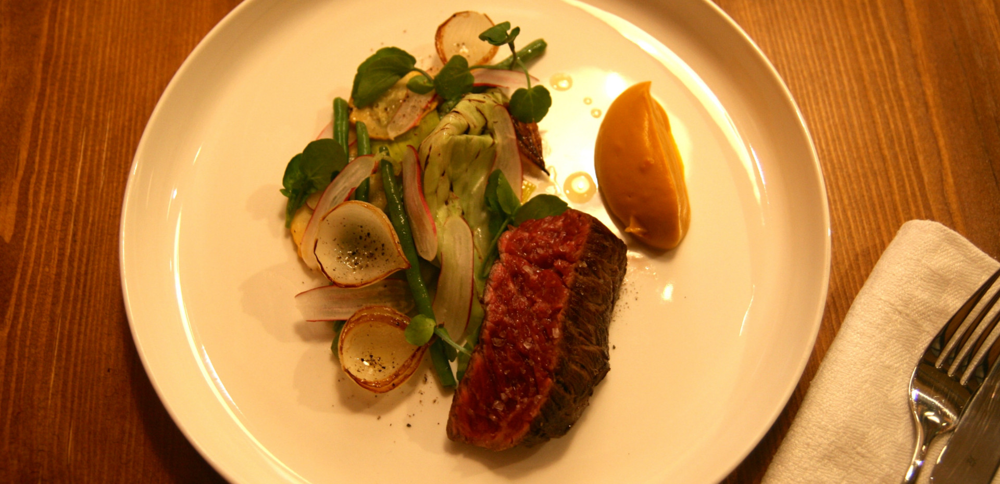

-


Open August 2014
Nice, France
[isi]
Restaurant
ABOUT ISI
A SPECIAL DINING EXPERIENCE
Welcome to ISI restaurant located in the heart of the Old town in Nice. Around a shared table in the middle of the room we serve menus that change every day. We believe that good produce makes a delicious meal. Our locally sourced products sometimes come in small quantities and differ from day to day, that is why we cook with a spontaneous and open mind and do not set menus in advance.
A HIDDEN GEM
ISI is situated in a room upstairs from the restaurant La Rossettisserie. ISI is not only a restaurant, but a place where smaller groups can come and have their privacy. No matter the reason or the occasion, ISI is taking care of the gastronomy. Read more about booking.
Passion for food
Isak Oldenburg, raised in Visby, Sweden, moved 2009 to Nice as a young chef to discover French cuisine. After travelling and working in restaurants in Saint Petersburg, Paris and Stockholm he is back in Nice to finally open his own restaurant in August 2014.
Pay with Bitcoin
At ISI we only accept cash and bitcoin as payment. Spend your bitcoins on excellent food and wine.
Dine at isi
Our menus
Lunch
Lunch menu 25€
● Starter
● Today’s main course
● Dessert
12h-14h
Available on reservation only.
Minimum 4 people.
Groups
Group menus 30€
3-COURSES
The 3-course group menu includes starter, main course, dessert and coffee.
Please let us know in advance if you have any food allergies or special requests.
Available on reservation only.
Minimum 8 people.
Dinner
Surprise tasting menu 44€
4-courses
The 4-course menu includes starter, main course, cheese plate, dessert, coffee and mignardise.
Please let us know in advance if you have any food
allergies or special requests.
All reservations at 20h00.
Reservation
- isirestaurant@gmail.com
- +33 (0)6 18 98 54 94
- 8 rue Mascoinat (1st floor)
- 06300, Vieux Nice
- France
View on map
"Great food starts with great products"
Around the shared table
Lunch
On reservation Tuesday to Friday
2-courses lunch-menu 18€
12:00-14:00
Dinner
On reservation Monday to Saturday
4-courses dinner menu 44€
20:00
Private events
ISI is an adaptable place perfect for any event where your privacy is important. Book ISI for a private event or a corporate meeting.
Breakfast / Lunch / Afternoon-tea / Dinner
Full privacy
Wi-fi connection
Food and drinks upon request
Maximum 12p
Our space is air conditioned
1 hour 100€
2nd hour +75€
3rd hour +50€
———————
3 hours 225€
Half day (6h) 400€
Complete day 600€
Coffee and sweets are included in prices quoted above. Food and drinks will be added to the bill.